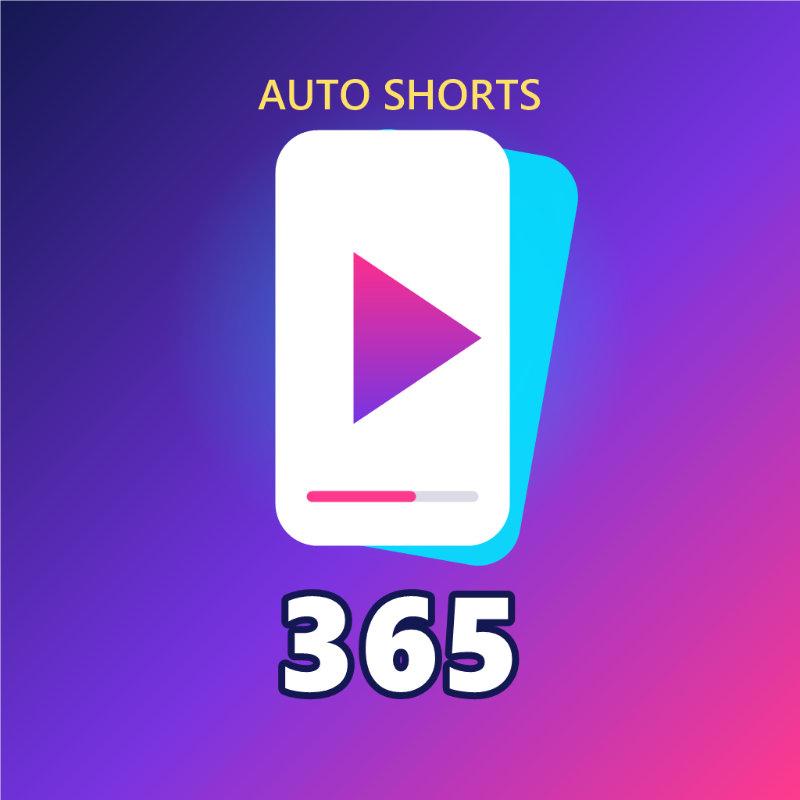

Windows desktop app that makes short vertical videos and, after the creator logs in and approves, posts them to the creator's own accounts (YouTube, TikTok and others) through each platform's official API.
윈도 데스크톱 프로그램입니다. 쇼츠 영상을 만들고, 만든 사람이 직접 로그인·허용한 본인 계정(유튜브·틱톡 등)에 각 회사의 공식 API 로 올립니다. 열쇠·토큰은 그 사람 컴퓨터에만 암호화되어 저장되고 운영자에게 보내지지 않습니다.